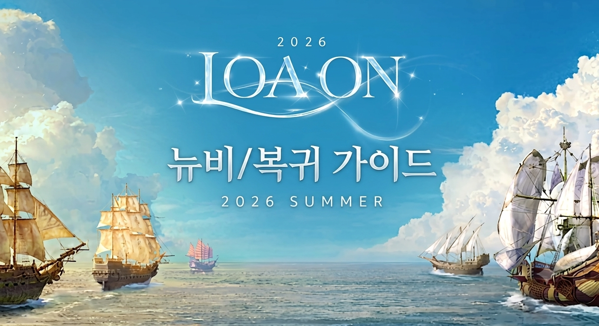

가이드 소개

이 공략은 로스트아크 홈페이지 ➡️ 공식 가이드 와 인게임 가이드의 리소스를 활용하여 작성하였습니다.
🖥️ 본 가이드는 데스크탑(PC) 환경에 최적화되어 제작되었습니다.
본 가이드의 문장 및 문법 검토, 레이아웃 작성은 제미나이(Gemini)의 도움을 받았습니다.

이 공략은 로스트아크 홈페이지 ➡️ 공식 가이드 와 인게임 가이드의 리소스를 활용하여 작성하였습니다.
🖥️ 본 가이드는 데스크탑(PC) 환경에 최적화되어 제작되었습니다.
본 가이드의 문장 및 문법 검토, 레이아웃 작성은 제미나이(Gemini)의 도움을 받았습니다.